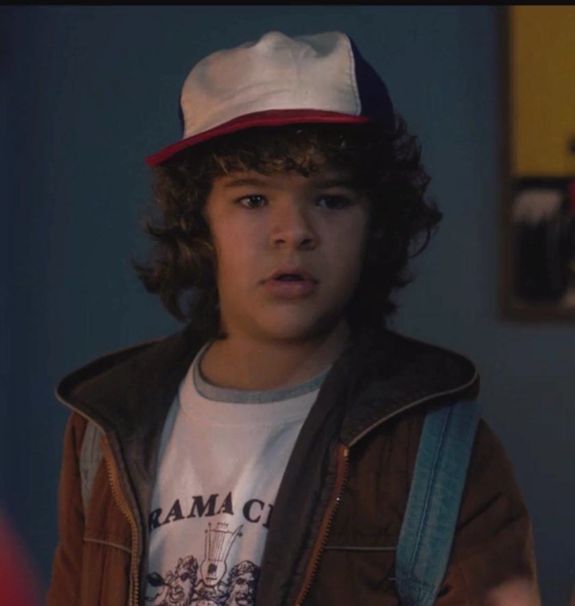

Dustin Henderson, interpretado por Gaten Matarazzo, é um dos personagens principais da série original da Netflix, Stranger Things. Ele é o melhor amigo de Mike Wheeler, Lucas Sinclair, Will Byers, Onze, Max Mayfield e Steve Harrington, amigo de Robin Buckley e Erica Sinclair, e namorado de Suzie, que supostamente ''forçou'' a morte de Hopper e Billy.